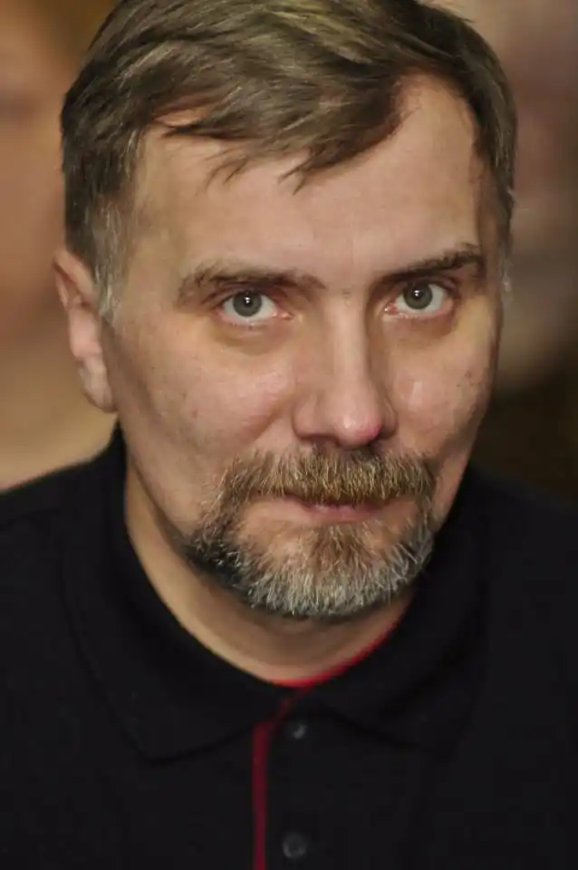
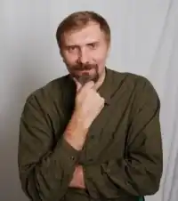
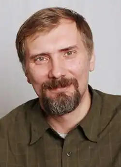
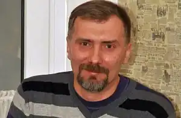

Антон Віталійович Санченко (29 липня 1966, Херсон) — український письменник, перекладач, видавець, розробник інформаційно-пошукових і аналітичних систем.
Антон Санченко народився в Херсоні. Закінчив середню школу в Києві 1983 року. 1986 року закінчив Херсонське мореходне училище. Працював начальником радіостанції в Керчі, Херсоні, Одесі, Стамбулі та Піреї.
У подальшому, 2005 року Антон Санченко закінчив філологічний факультет Київського національного університету імені Тараса Шевченка. Оповідання Санченка друкувалися в журналах, газетах, на літературних інтернет-сайтах. Перша збірка під назвою "Вызывной канал" вийшла 2003 року. 2008 року у видавництві "Факт" вийшла збірка оповідань "Баркароли" та роман-придибашка "Весілля з Європою". У 2010 році вийшла електронна книга оповідань Антона Санченка "Нариси бурси" — одна з перших електронних книг в українській літературі. 2011 у видавництві "Темпора" — збірка "Нариси бурси" та у видавництві "К.І.С." — колективний переклад книги "Навколосвітня подорож вітрильником наодинці" капітана Джошуа Слокама. У 2016 вийшла книга "Земля Георгія". Бібліографія: Вызывной канал: оповідання російською мовою, 2003 Весілля з Європою: роман-придибашка, 2008 Баркароли: оповідання, 2008 Нариси бурси: оповідання, 2010 Нариси бурси: оповідання, 2011 Земля Георгія: повісті, 2016